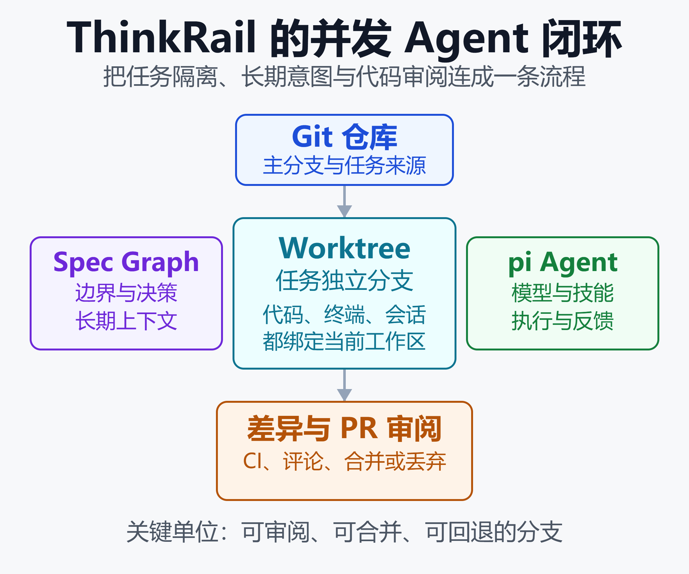

JetBrains 开源 ThinkRail：把 Pi Agent 装进 Worktree IDE
2026 年 11 月 5 日，JetBrains 开源项目 ThinkRail 已获得约 7,700 个 GitHub Star、469 个 Fork，创建至今不足四个月。这个速度说明，开发者正在寻找的不只是更强的代码模型，而是能同时管理多个 Agent 的工作台。
ThinkRail 给出的答案不是再加一个聊天面板。它把 pi Coding Agent 放进独立的 Git Worktree，再把编辑、终端、规格文档、变更审阅和 GitHub PR 串成一条轨道。每个 Agent 在自己的分支上行动，最终由人决定哪些成果进入主线。
这套设计的价值在于，它把 AI 编程最容易失控的三个问题放在一起处理：并发修改如何隔离，跨会话意图如何保留，Agent 生成的改动如何被审阅和合并。

ThinkRail 的核心闭环是：同一仓库派生出隔离工作区，Agent 在工作区执行任务，规格文档提供长期约束，最终通过差异与 PR 回到主分支。图中的关键结论是，隔离单位不再只是聊天会话，而是可审阅、可合并的 Git 分支。
一个 Agent IDE，为何从 Worktree 开始
常见 AI 编程工具把 Agent 放在当前项目目录里工作。单个任务时，这种方式足够直接；多个任务并行时，它却容易出现文件覆盖、依赖状态互相影响和未完成改动混在一起的问题。
ThinkRail 将每个工作区建立为 Git Worktree。一个仓库可以切出多个工作目录，每个目录对应自己的分支和当前路径。Agent、编辑器标签、终端和 Git 变更视图都绑定到当前工作区。
这不是把分支列表换成更漂亮的 UI，而是改变了 Agent 的执行边界。一个任务修复登录流程，另一个任务重构数据层，二者可以同时修改同一仓库，却不会直接污染对方的文件系统状态。
并行的前提，是让失败可丢弃
并行 Agent 的真正成本不在于多开几个模型会话，而在于失败任务怎么退出。若多个 Agent 都在主工作目录写入文件，一次错误的大范围修改会让人工清理变得昂贵。
Worktree 把试错限制在分支中。可接受的改动可以推送、创建 PR 并合并；方向错误的工作区则可以丢弃。ThinkRail 还会把长期未活动、或已对应合并和关闭 PR 的工作区放入每个项目的“Settled”区域。
这种方式不能自动解决合并冲突，但让冲突出现在可识别的分支边界。对于同时运行多项需求、修复和实验任务的小团队，这比让多个 Agent 共享一个未提交的工作目录更可控。
从会话并发，走向任务并发
ThinkRail 支持一个工作区内存在多个 pi 会话，并显示实时 token 和成本信息。会话可以继续追问、排队后续任务，也可以把子任务委派给子 Agent。
但它没有把“会话数越多”当成生产力指标。每个会话仍需落在明确的工作区、计划和改动集里。这样，Agent 的输出才有机会从一段聊天记录，变成能够评审和回滚的工程成果。
活规格，解决 Agent 的长期记忆问题
模型上下文再长，也不等于项目知识可持续。一次会话里读到的架构决定、边界约束和历史取舍，换一个会话、换一个模型或发生上下文压缩后，都可能丢失。
ThinkRail 将 SPEC.md 作为代码旁的长期知识载体，并把相关规格文档呈现为可浏览的图。Agent 通过专门的 spec_* 工具读取、检索和维护这些规格，而不是只依赖提示词中的临时说明。
规格不是长文档，而是模块边界
从项目自身的工程约束看，每个有意义的模块和目录级子模块都可以拥有 SPEC.md。规格要说明职责、公开接口、允许依赖和禁止触达的范围；跨模块依赖边应写在父级规格中。
这使规格承担了比需求文档更具体的职责。它既描述产品为什么这样做，也约束代码可以如何改。一个会改变模块边界、通信协议或关键决策的修改，理应同时更新所属规格。
对 Agent 而言，这是一种外置记忆。对团队而言，它是一种可审阅的架构契约。两者结合后，新的 Agent 不必完全从代码反推意图，维护者也不必靠口头传承来解释每一条边界。
活规格也有维护成本
规格图不是魔法。规格过于笼统时，Agent 仍会猜测；规格与代码不一致时，错误的上下文甚至会比没有上下文更危险。
因此，ThinkRail 的价值取决于团队是否愿意把规格更新纳入改动流程。它更适合已有架构边界、愿意写下关键决策的项目，而非只追求一次性生成页面或脚本的场景。
这个思路与 从 LLM 到 Agent：AI 编程范式正在改变 的趋势一致：工具竞争逐渐从单轮回答质量，转向任务执行过程能否被约束、观察和复用。
把 pi 放在引擎层，ThinkRail 专注工作台
ThinkRail 的技术路线刻意保持克制。它在进程内运行 @earendil-works/pi-coding-agent，不把 Agent 当作外部命令行子进程启动。模型选择、技能、上下文压缩、成本统计和会话状态由 pi 负责。
ThinkRail 自己主要掌管工作区、编辑器与通信协议。项目将结构分为三层：Bun 驱动的 HTTP 与 WebSocket 引擎宿主，类型化且有版本的协议层，以及由 React 19、Zustand 和 Tailwind v4 构成的 Web UI。
这种边界划分有两个结果。第一，桌面应用和浏览器打开的 CLI 共享同一个宿主逻辑。第二，UI 不需要重新实现模型会话状态，避免出现“界面显示的成本”与“Agent 实际消耗的成本”不一致。
不重新发明模型接入
ThinkRail 可使用 JetBrains AI，也能沿用 pi 的认证和提供商配置。对于企业网关或本地模型，它支持接入 OpenAI 兼容服务，包括 LiteLLM、vLLM、Ollama、LM Studio 和 llama.cpp。
这让工作台与模型供应商解耦。团队可以按任务选择云端模型、内部网关或本地模型，而不必为了切换模型放弃 Worktree、规格和审阅流程。
代价也同样清晰：pi 的版本、提供商兼容性和模型的真实执行能力，会直接影响 ThinkRail 的体验。它不是一个把底层 Agent Runtime 完全封装起来的封闭产品。
MCP 与权限，采用显式授权
MCP 服务器会扩大 Agent 可调用的能力，也会扩大误操作范围。ThinkRail 读取 pi 的 MCP 配置，并在服务器没有标记为只读时，要求在聊天中确认调用；仓库定义的服务器默认也需要用户同意后才启用。
这种设计没有消除工具风险，却把授权决策留在工作流中。对于带数据库、云资源或发布权限的 MCP，仍应最小化凭据权限，并把高风险操作放在人工确认之后。
关于协议和工具边界，可延伸阅读 MCP 与 A2A：AI Agent 协议深度解析。
从改代码到合 PR，闭环补在哪
许多 Agent 演示止步于“生成了一个补丁”。真实团队还要面对变更是否可读、测试是否通过、远端分支是否同步、PR 是否获批，以及失败后由谁继续处理。
ThinkRail 将这些步骤放入同一工作台。用户可以查看差异和文件评论，把评论作为结构化上下文送入聊天；也能查看 GitHub PR 的 CI 检查和审阅决定，并由 Agent 处理失败检查或分支分叉。
它的关键不是替人合并，而是让每次 Agent 行动留下可以定位的痕迹：对应哪个工作区、哪个分支、哪段计划、哪组文件变更，以及后续需要哪一步人工决策。
适合试点的三类工作
- 并发需求拆分：把独立功能、缺陷修复和探索性改动放在不同 Worktree，减少相互干扰。
- 架构约束明确的仓库：将模块边界、依赖规则和设计决策写入规格，给 Agent 提供稳定上下文。
- 需要严格审阅的改动：通过可回看的差异、PR 和 CI 结果，把 Agent 产出纳入现有代码评审流程。
相对而言，单文件临时脚本、没有 Git 纪律的个人目录，以及缺少维护者审阅的自动化发布，并不能从这套复杂工作流中获得同等收益。
热度很高，但成熟度仍需验证
截至 2026 年 11 月初，ThinkRail 的星标和 Fork 增长很快，说明“并发 Agent 加隔离工作区”的方向获得了开发者关注。仓库同时仍标注为 JetBrains Incubator 项目，开放 Issue 数也达到数百个。
这意味着它更适合以试点方式进入团队。可以先选择一个测试覆盖较好、依赖环境相对简单的仓库，限定 Agent 的文件范围和 MCP 权限，再观察合并冲突率、PR 审阅耗时、返工次数与模型成本。
目前官方尚未公布 ThinkRail 与 Cursor、Claude Code、Codex 或 JetBrains Junie 的同口径生产力基准。GitHub Star 代表关注度，不代表任务成功率、代码质量或企业部署成熟度。
在模型层之外，团队还应评估 Worktree 是否适配现有开发环境。共享数据库、本地端口、依赖缓存、环境变量和迁移脚本都可能因多工作区并行而产生新的冲突点。
试点时，先跟踪四个工程信号
- 合并冲突率：独立分支是否真的降低了并行修改互相覆盖的次数。
- 审阅返工率：规格和计划是否让代码评审更快定位错误前提。
- 环境初始化耗时：每个 Worktree 启动依赖、服务和测试环境需要多久。
- 单任务总成本：同时计算模型 token、人工审阅和失败分支清理的时间。
这四项数据比 Star 数更接近团队的真实收益。若并行任务减少了等待和返工，且额外环境成本可控，Worktree 工作流才值得逐步扩大；若分支和环境管理反而成为瓶颈，应先缩小并发范围。
小结
ThinkRail 的重要性不在于它是否马上取代现有 IDE，而在于它提出了一个更工程化的问题：当 AI 编程从单次辅助走向多任务并行，开发环境该怎样管理 Agent 的执行边界。
它的答案是让每个任务拥有独立 Git Worktree，用活规格保存长期意图，用 pi 承担模型与会话能力，再把差异、PR 和 CI 拉回人类审阅。这条链路把“能写代码”推进到“能被团队安全接纳”。
如果团队正从一个 Agent 试水，转向多 Agent 协作，值得重点观察的不是界面里有多少模型按钮，而是隔离、上下文和合并是否成为一条可控流程。ThinkRail 的实验价值，正集中在这里。
免责声明
本文基于 ThinkRail 仓库、项目文档和公开 GitHub 元数据撰写。功能、安装方式、发布版本、社区数据与模型支持可能变化，请以项目仓库和官方发布页为准。文中关于适用场景与工程取舍的内容属于架构分析，不构成采购、部署或安全合规建议。
参考来源
- GitHub —— JetBrains/thinkrail 项目主页
- GitHub —— ThinkRail README：功能、安装与隐私说明
- GitHub —— ThinkRail AGENTS.md：模块边界与工程约束
- GitHub —— JetBrains/thinkrail Releases 发布页
- JetBrains —— AI Assistant 中的 Agent 文档
相关阅读
推荐搭配装备
善其事，利其器。以下硬件能最大化你的AI体验👇
🔗 通过以上链接购买可支持本站持续运营 🙏